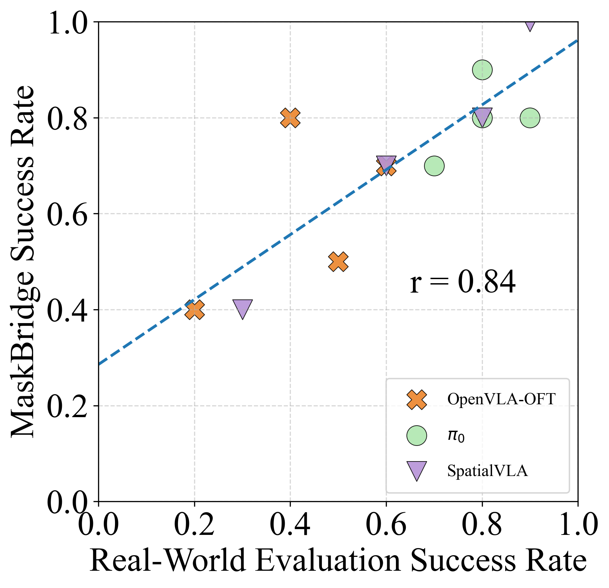
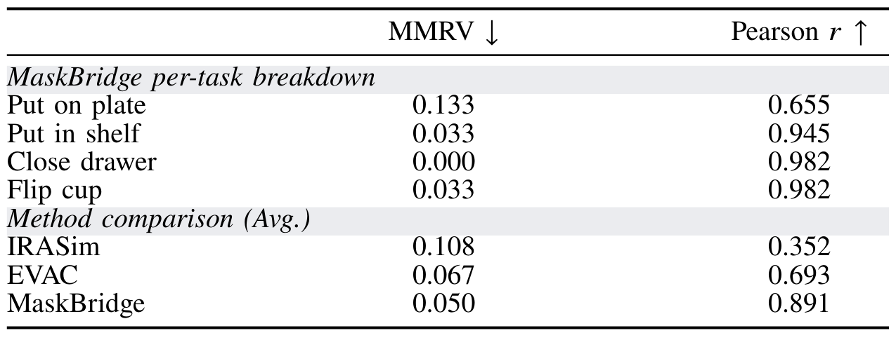
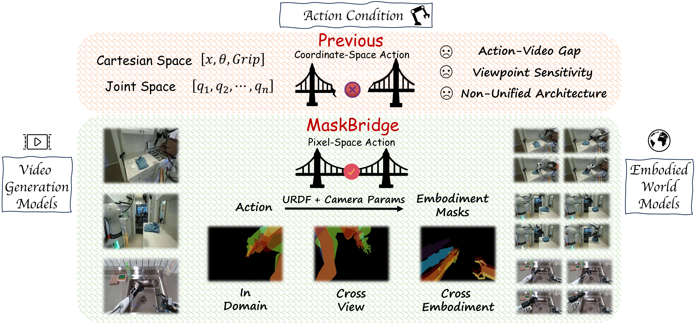
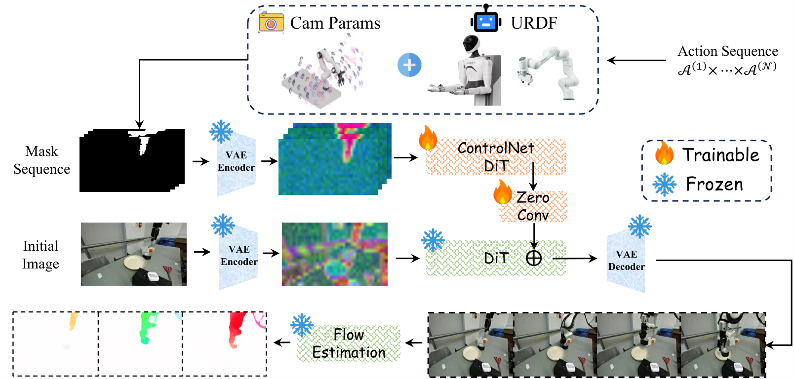
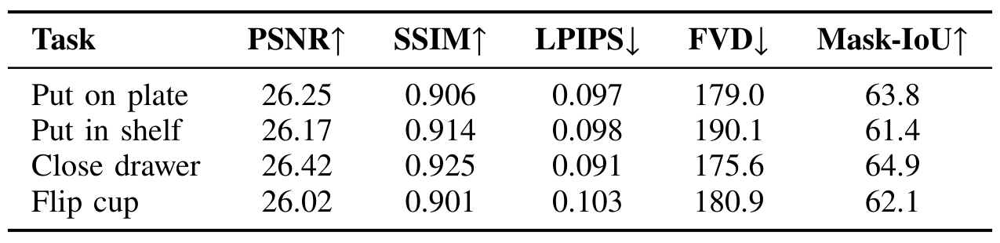
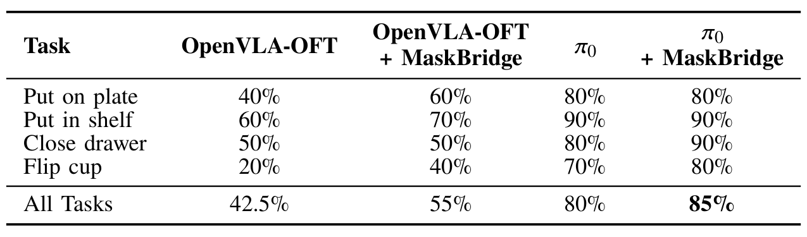

Policy Evaluation
MaskBridge predicts policy outcomes without real-world execution. Pooled success rates correlate with real-world outcomes at Pearson r = 0.84.


MaskBridge turns actions into pixel-aligned embodiment masks, connecting pretrained video generators to robotic world models across viewpoints and embodiments. The same mask interface also enables learning from uncalibrated, action-free videos.
Embodied world models, which predict future visual observations conditioned on actions, extend video generation from passive synthesis to interactive prediction of physical dynamics. A central obstacle is that the actions of an embodied agent live in a low-dimensional coordinate space, whereas pretrained video generation models operate in pixel space. This single mismatch weakens action conditioning, makes models sensitive to camera viewpoints, forces embodiment-specific architectures, and ties training to calibrated, action-annotated robot data. We present MaskBridge, which resolves this mismatch at the representation level: coordinate-space actions are converted into pixel-aligned embodiment masks rendered from the robot URDF and camera parameters, and injected into a pretrained video generation model via a ControlNet-style pathway. Because the conditioning lies in pixel space, it aligns actions with predicted videos, accommodates diverse camera viewpoints, and unifies the architecture across embodiments. Moreover, since the conditioning masks can equally be extracted from raw videos by off-the-shelf segmentation, training requires neither camera calibration nor action annotations, allowing MaskBridge to exploit large-scale egocentric human videos. To mitigate overfitting to static backgrounds, MaskBridge further introduces a flow-based motion loss that concentrates learning on dynamic, task-relevant regions. On single-arm (DROID) and dual-arm (AgiBot-G1) datasets with unseen viewpoints and scenes, MaskBridge outperforms state-of-the-art embodied world models. On downstream real-world tasks, it further serves as a reliable proxy for policy evaluation and as a predictive critic whose closed-loop control achieves higher success rates than the vision-language-action (VLA) policies alone.

Figure 1: MaskBridge vs. previous methods. Pixel-aligned embodiment masks bridge video generation models to embodied world models, addressing the action–video gap, improving viewpoint robustness, and yielding a unified architecture across embodiments.
MaskBridge is an action-conditioned embodied world model that predicts future videos from an initial image and an action sequence. The core idea is to bridge actions into the visual domain by converting them into pixel-aligned embodiment masks and injecting them into a pretrained video diffusion model.
The action-to-mask conditioning module converts coordinate-space actions into pixel-aligned embodiment masks rendered from the URDF and camera parameters.
Standard diffusion losses supervise frames independently and may overlook temporal structure. To improve spatiotemporal consistency, MaskBridge combines two motion-aware objectives:

Figure 2: Overview of the MaskBridge pipeline. Actions are projected into pixel-space masks using URDF and camera parameters. The initial image and mask sequence are encoded by VAE, with mask features injected via a ControlNet branch into the DiT backbone. The model generates action-consistent videos, trained with diffusion, dynamics-consistency, and flow-based objectives.
MaskBridge predicts policy outcomes without real-world execution. Pooled success rates correlate with real-world outcomes at Pearson r = 0.84.


MaskBridge scores candidate outcomes against a goal image. Video prediction remains consistent across translation-dominated and rotation-heavy tasks; refining the action search improves success on close drawer from 30% to 50%, and on flip cup from 0% to 30%.

VLA policies propose candidate actions and MaskBridge scores their predicted outcomes. Overall success improves from 42.5% to 55% for OpenVLA-OFT, and from 80% to 85% for π₀.
